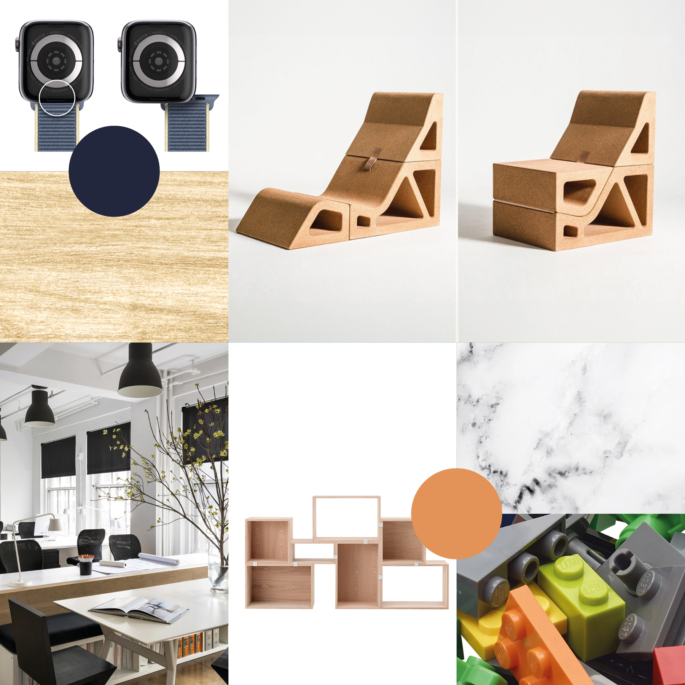

05 / 06
Brand Identity & Product Design
Panoramica
Progetto di tesi sviluppato durante il biennio 2022/24 all'ITS Academy Machina Lonati, in collaborazione con Voxart, l'agenzia di comunicazione dove ho svolto il tirocinio. Il progetto si articola in due parti: la ridefinizione dell'identità visiva di Kleis, azienda specializzata nella produzione di maniglie di design, e la progettazione di Versa, una maniglia modulare inclusiva pensata per un'utenza universale.
Logotipo, variante principale, Mandarino Atomico e Blu Oxford
Variante monocolore Blu Oxford e feed Instagram
Homepage del sito web
Applicazioni del brand: timbro, sketchbook e vetrofania
Brand in contesto, mockup digitale
Approccio
Il punto di partenza è il marchio esistente di Kleis, ridisegnato per rafforzare l'identità dell'azienda senza tradirne la storia. Il nuovo logotipo mantiene la freccia come elemento caratterizzante della K, simbolo di dinamismo e direzione, declinata in una geometria più moderna e bilanciata.
La palette si costruisce intorno a due colori dominanti: il Mandarino Atomico, un arancione caldo e materico, e il Blu Oxford, un blu notte profondo che conferisce autorevolezza. Il sistema si estende su tutti i touchpoint: sito web, social media, cancelleria e segnaletica.

Moodboard ispirativo, principi di Universal Design e modularità
Sketch di ideazione e sviluppo modulare
Approccio
Versa nasce da una domanda precisa: e se una maniglia potesse adattarsi a chi la usa, invece di obbligare l'utente ad adattarsi a lei? Il progetto esplora il principio dell'Universal Design applicato all'oggetto più quotidiano di un edificio.
Il sistema è composto da moduli intercambiabili: una base in alluminio standard, un modulo a gomito per chi non può abbassare la mano, un modulo push&pull per l'apertura senza presa, e una placca in braille personalizzabile per identificare la stanza. I moduli si combinano liberamente, in materiali e finiture diverse.
Render dei moduli Versa, varianti di forma e materiale
Maniglia Versa in contesto architettonico
Agenzia
Voxart
Università
ITS Academy Machina Lonati
Relatore
Michele Scarpellini
Anno
2024